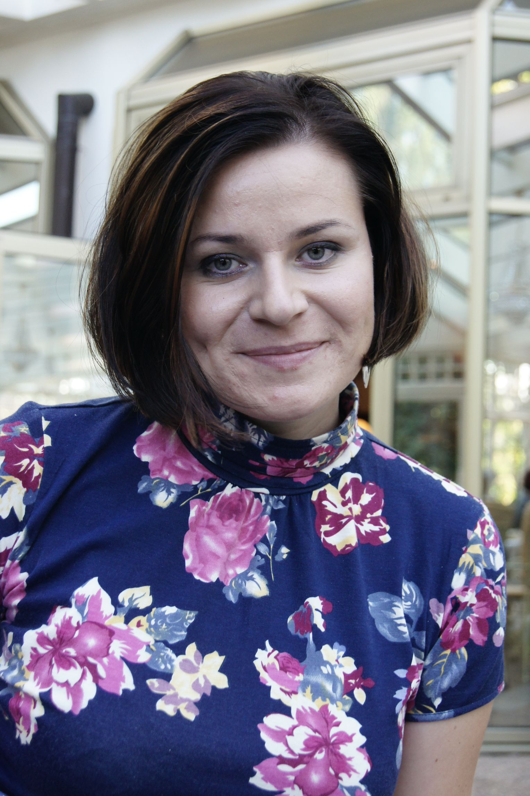

Faculty
Tamara Trojanowska
Agnieszka Jeżyk
Aleksandra Swiecka
 |
Tamara TrojanowskaAssociate Professor, Polish 121 St. Joseph Street, Room 423 Click for: Office Hours |
| Biography: A graduate of the Drama Centre at the University of Toronto (PhD) and of Theatre Studies at the Jagiellonian University in Kraków (MA), Tamara Trojanowska has also formerly held an Oxford University scholarship and an internship at the Royal Dramatic Theatre in Stockholm. She has taught at universities in Poland, Canada, and the United States, returning to University of Toronto as a faculty member in 1998. Since then, she has directed the Polish Language and Literature Program at the Slavic Department, strengthening in strides its profile and presence in North America , as well as the University College Drama Program (2008-2012). In 2012, together with Stephen Johnson, then director of the Graduate Drama Centre, she integrated the two units to form the Center for Drama, Theatre and Performance Studies, with which she is cross-appointed. She now serves as Director of the Centre. Her current research focuses on the intersections of drama and theatre with history and religious thought, and emphasizes issues of identity, subversion, and transgression, topics that she has published on in Poland, Canada, United States, and England. Her latest research project, co-edited with Joanna Niżyńska and Przemysław Czapliński and entitled A History of Polish Literature and Culture: New Perspectives on 20th and 21st Centuries, counts over 1350 pages and presents more than sixty essays by diverse authors from all over the world, including her extensive analysis of the transgressive practices in Polish drama and theatre ( “Delectatio furiosa, or the modes of cultural transgression”). She has also contributed a paper on this subject to the upcoming The Theatre of Tadeusz Kantor (eds. Magda Romanska and Cathleen Cioffi), with her investigations of the dramatic and the sacred resulting in a new selection of, and an extensive introduction to, the plays of Roman Brandstaetter (2016). Alongside her continuing administrative and research work, Trojanowska has served for five years as an elected member on the Executive Committee of the Division of Slavic and East European Literatures in Modern Languages Association and is an elected Board Member of the Polish Institute of Arts and Science in America. She also sits on the Advisory Boards of a number of professional journals, including Didaskalia (Jagiellonian University, Kraków), Polish Theatre Perspective (UK), Postscriptum (Silesian University, Poland), The Sarmatian Review (Rice University), and Teksty Drugie (Kraków). Research Interests: Polish culture and literature of the 20th and 21st centuries; culture and history; discourses of identity; theories of drama, theatre and performance. Education: Ph.D., University of Toronto, 1994 |
|
Agnieszka JeżykAssistant Professor, Teaching Stream 121 St. Joseph Street, Room 423 Click for: Office Hours
|
|
TEACHING EXPERIENCE: University of Toronto European avant-gardes; everyday life in the Cold War Central Europe; History of Central and Eastern Europe through cinema and comics; technology, gender, and biopolitics in the interwar period Poland; Polish poetry of the 20th and 21st centuries. Education: 2019 Ph.D. The University of Illinois at Chicago, Dissertation: “Insatiable Appetite. Excessive Matter in Bruno Jasieński’s Poems.” |
|
|  | Aleksandra SwieckaVisiting Professor, Polish 121 St. Joseph Street, Room 424A Click for: Office Hours
|
Biography: Aleksandra Święcka, lecturer at Polonicum Centre of Polish Language and Culture for Foreigners at the University of Warsaw, is vice editor-in-chef of „Kwartalnik Polonicum”. She graduated in Polish Philology (M.A.) and Postgraduate Speech Therapy Course and completed her PhD in the Humanities (Linguistics and Language). Aleksandra Święcka is the author of a number of articles about teaching Polish to foreigners and of a Polish coursebook for teenagers. She cooperated with numbers of universities, among others: in Germany (Tubingen and Mainz), Scotland (Glasgow), Austria (Vienna) and Canada (Toronto). Research Interests: Her research interests are foreign language acquisition, teaching Polish to foreigners, methodology of teaching foreign languages, phonetics and orthography of Polish language, language correctness, visual-spatial communication, Polish Sign Language, Polish Sign Linguistics. Education: - Ph.D., University of Warsaw, 2016, Ph.D. in Humanities (Linguistics and Language); |
|